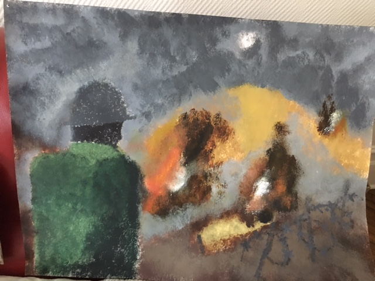
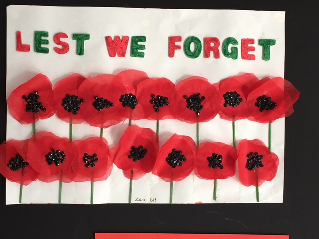
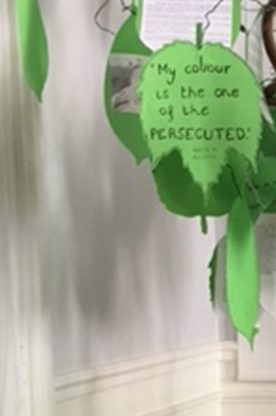
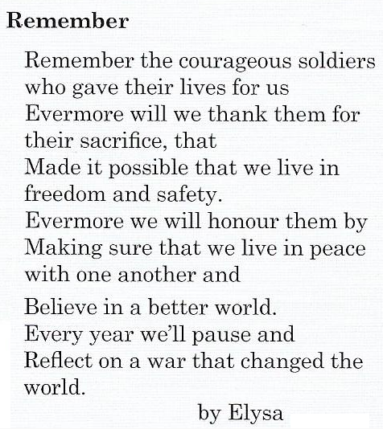
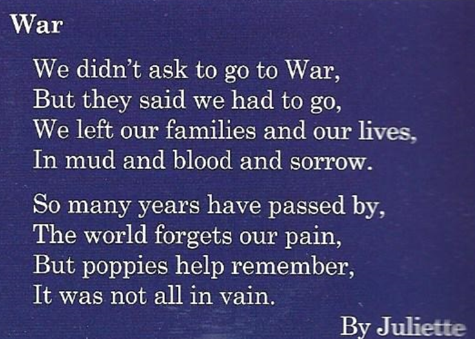

Informing students of all ages about remembrance, explaining its importance, and encouraging young people to express remembrance in a meaningful way.
If your school would like to take part in the Remembrance project, please get in touch.
✉ EmailIn 2014 the Royal British Legion launched a high-profile remembrance campaign in the United Kingdom, culminating with the 'Blood Swept Lands and Seas of Red' poppy art feature in the Tower of London. Inspired by that success, the Paris Branch hosted a meeting in early 2015 for teachers who had expressed interest in a working partnership with the RBL, and formulated a Remembrance project aimed at Anglophone schools and sections in Paris and its suburbs.
“Remembrance” is an invitation to pupils to express their understanding of the theme in whatever way they wish, using one or several media — artwork, writing, film or music. The theme is not restricted to the First World War; it could be inspired by any conflict. The project is part of a partnership between schools in the international community, with the emphasis on participation rather than winning, and pupils should be able to speak about their entry and explain the reasons behind their choices. There are four categories — KS is Key Stage, the English school system; French equivalents are given in brackets: Primary (école primaire, CP to CM2), KS 3 (collège, 6ème, 5ème and 4ème), KS 4 (3ème at collège and 2nde at lycée), and KS 5 (lycée, 1ère and Terminale).
Between 2015 and 2017 the Royal British Legion organised several school visits, and we are showcasing some of the results below.







The British Section Magazine “Insites”.



